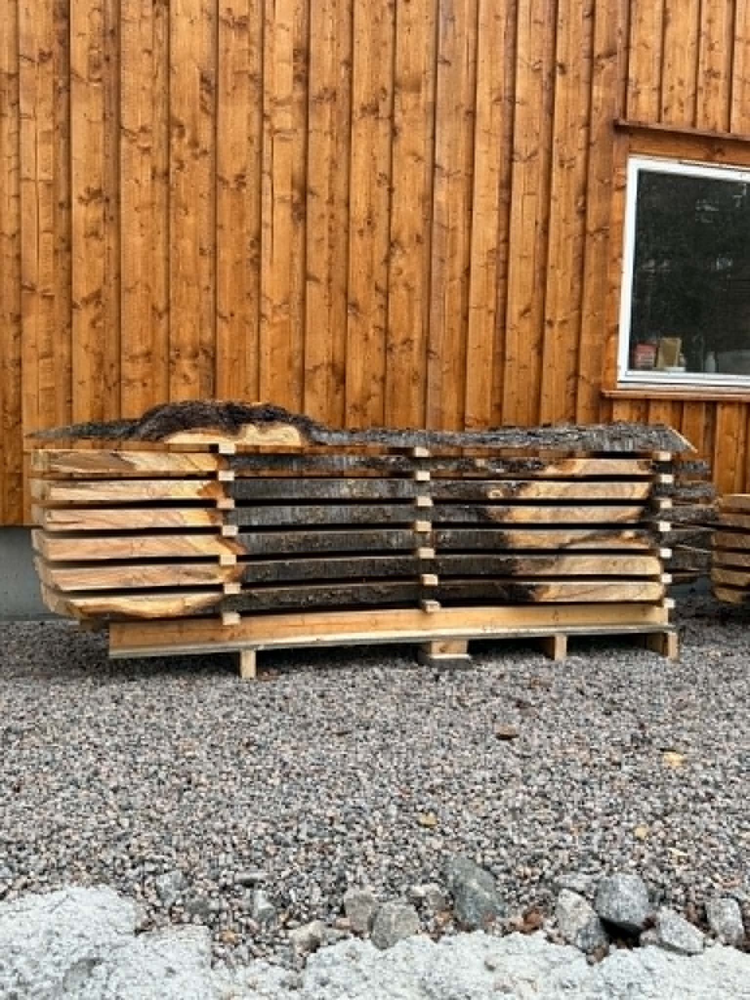
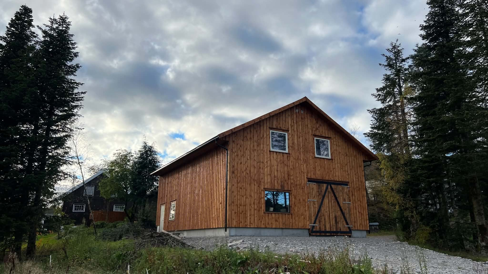
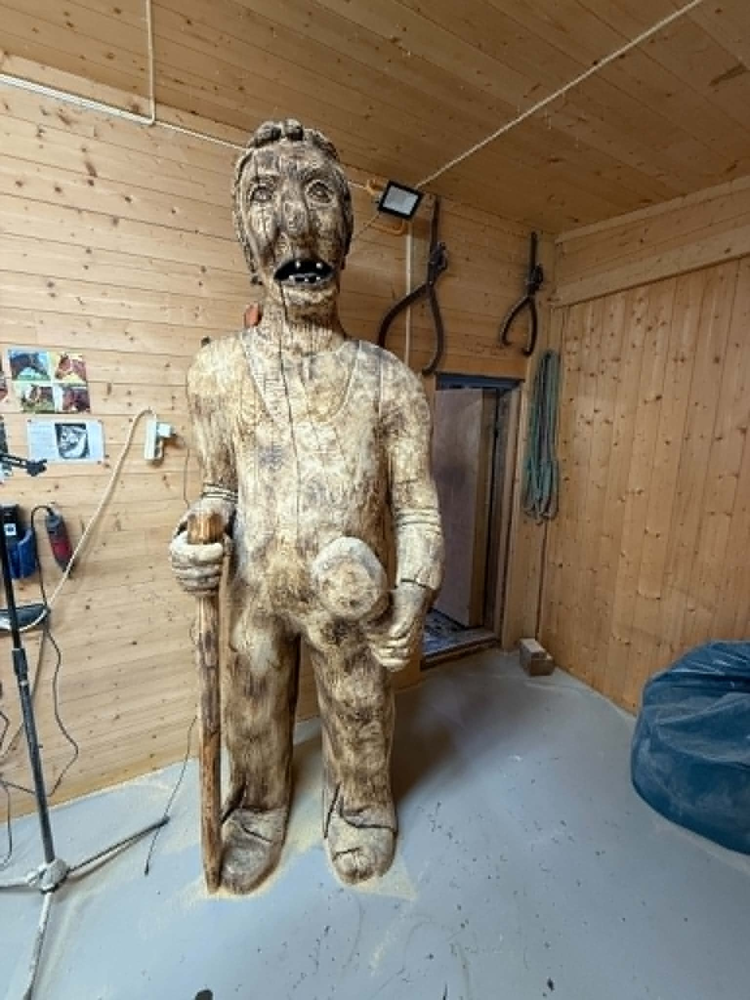
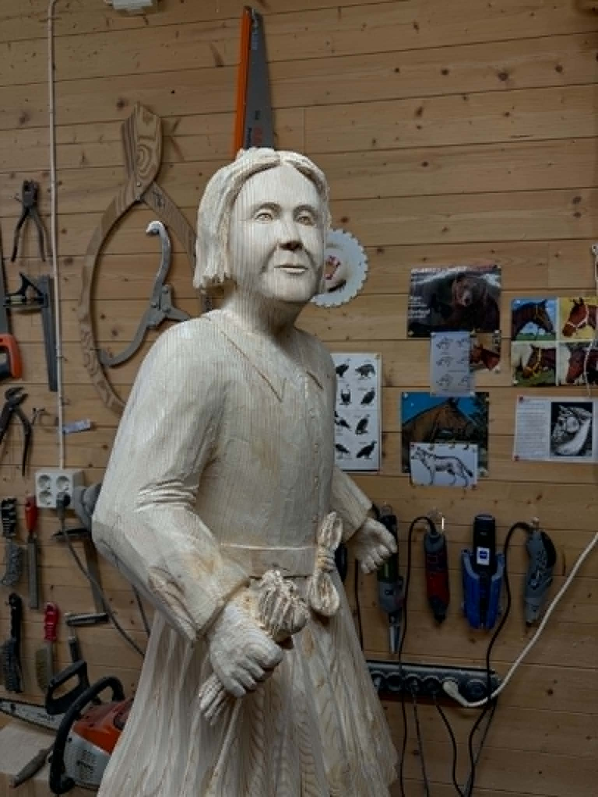
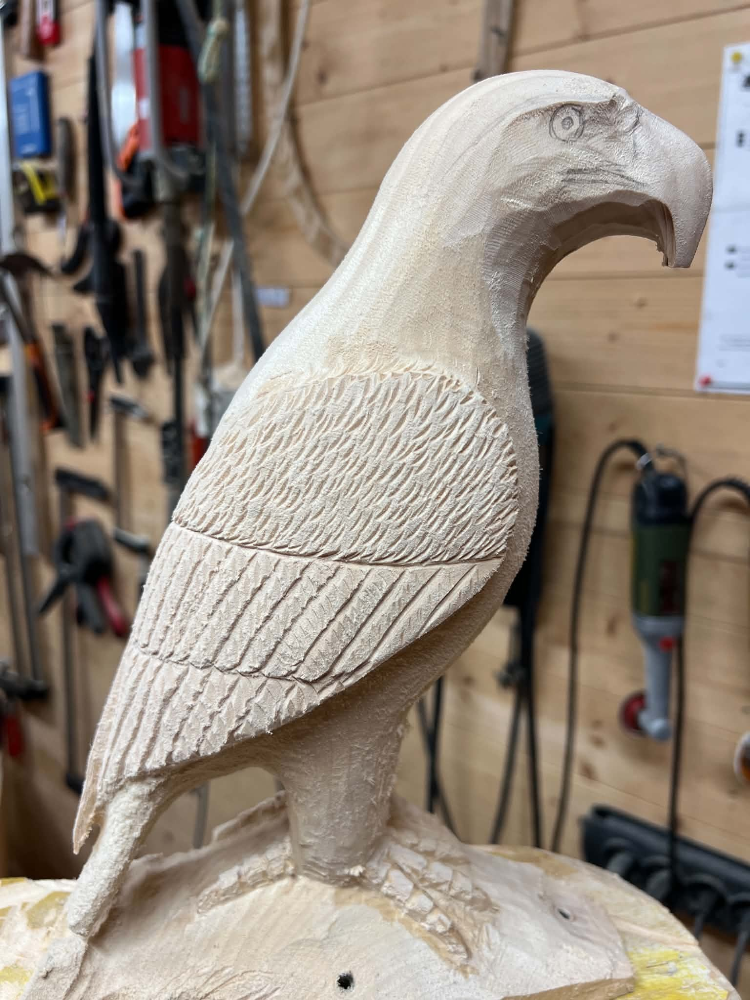

Leieskjæring av egne stokker
Vi tar imot og skjærer tømmer fra kundens egen skog.
Leieskjæring i Lindesnes
Vi sager tømmeret ditt til plank, kledning og spesialdimensjoner. Lokalt trevirke med historie, i Lindesnes og Mandalsregionen.

Våre tjenester
Vi tar imot og skjærer tømmer fra kundens egen skog.
Skjæring av spesialdimensjoner tilpasset kundens behov.
Materialer med særpreg til møbler, interiør og håndverk.
Kortreiste råvarer fra regionen med fokus på kvalitet.
Priser
Vi fakturerer etter medgått tid, fordi ingen stokker er like. Under ser du timeprisen og en typisk jobb, slik at du vet omtrent hva du går til før du tar kontakt.
1 090 kr per time eks. mva.
1 362,50 kr inkl. mva. for privatkunder
Fem rette granstokker på 5 meter, til sammen rundt 3 kubikk, saget til 19 × 125 mm kledningsbord.
Tilsvarende kledning koster typisk 25–50 kr per meter i byggevarehandelen.
Tallene over er veiledende erfaringstall, ikke et bindende tilbud. Send gjerne bilde av tømmeret, så forsøker vi å gi et konkret prisanslag før vi setter i gang.
Slik foregår det
Ring eller send e-post med bilde av tømmeret. Fortell hva materialene skal brukes til, så finner vi ut om det lar seg gjøre og hva det vil koste.
Tømmeret leveres til Skeie. Stokkene bør være kappet i ønsket lengde og børstet fri for jord og stein, som ellers ødelegger sagbladet.
Vi sager til avtalt dimensjon og legger materialene i stabel. Du er velkommen til å være til stede mens vi jobber.
Ferskt virke må tørke før det kan brukes. Vi forklarer gjerne hvordan du stabler og lufter materialene riktig hjemme.
Galleri




Vi legger ut bilder og videoer fra saga og verkstedet jevnlig.
Bilder og videoer på InstagramOm Skeie Sag
Skeie Sag bygger videre på familiebedriften som ble etablert i 1981 med samme navn.
Vi tilbyr spesialsaging, lokalt trevirke, eik og leieskjæring av kundens eget tømmer.
Målet er å ta vare på lokale ressurser og gjøre trær med historie om til materialer som kan leve videre i nye prosjekter.
Kontakt
Ta gjerne kontakt for en uforpliktende prat. Send gjerne med et bilde av tømmeret, så er det lettere å si noe om hva som lar seg gjøre.